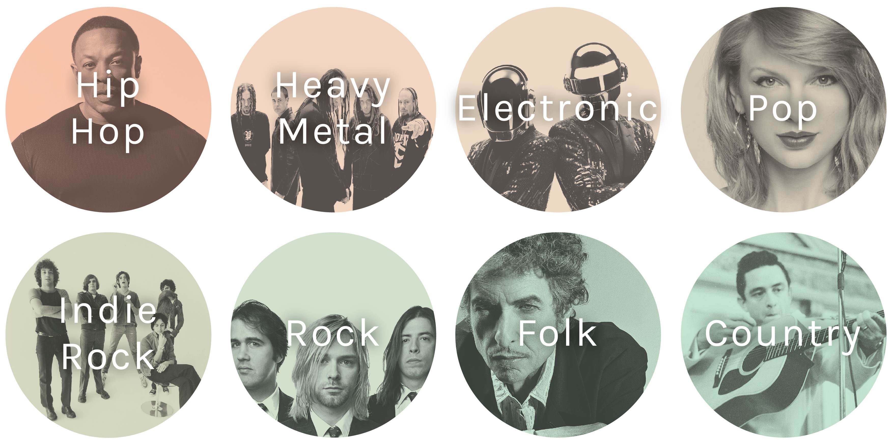
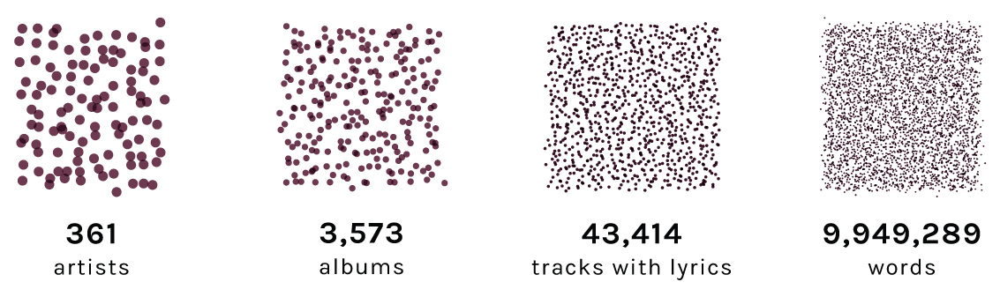
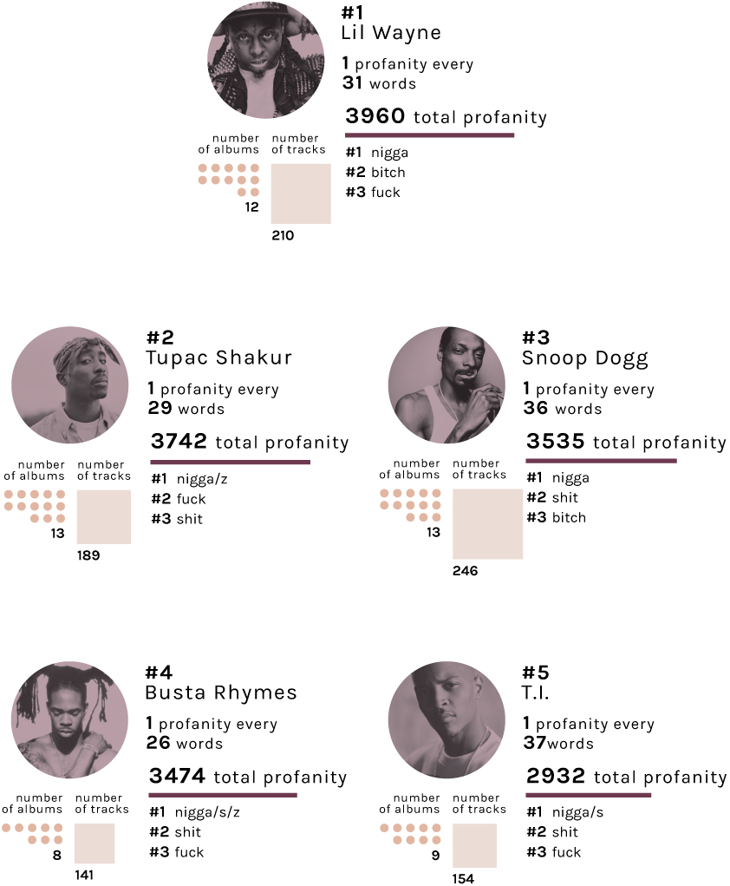
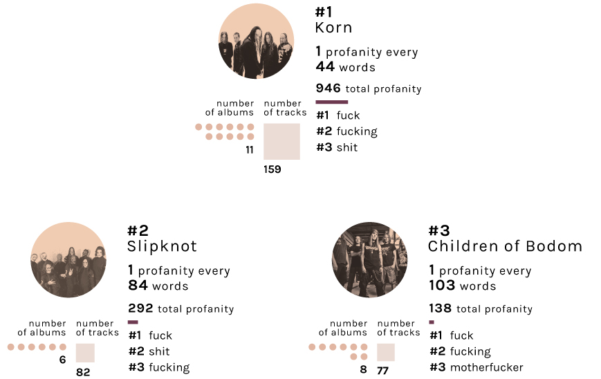
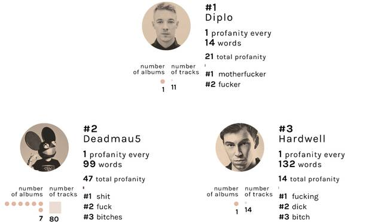
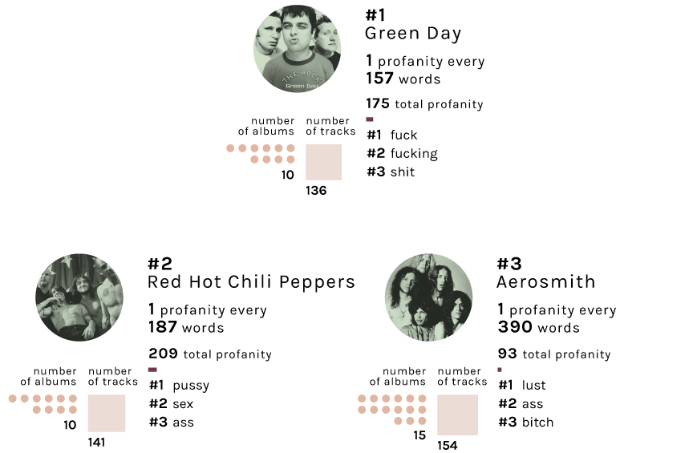
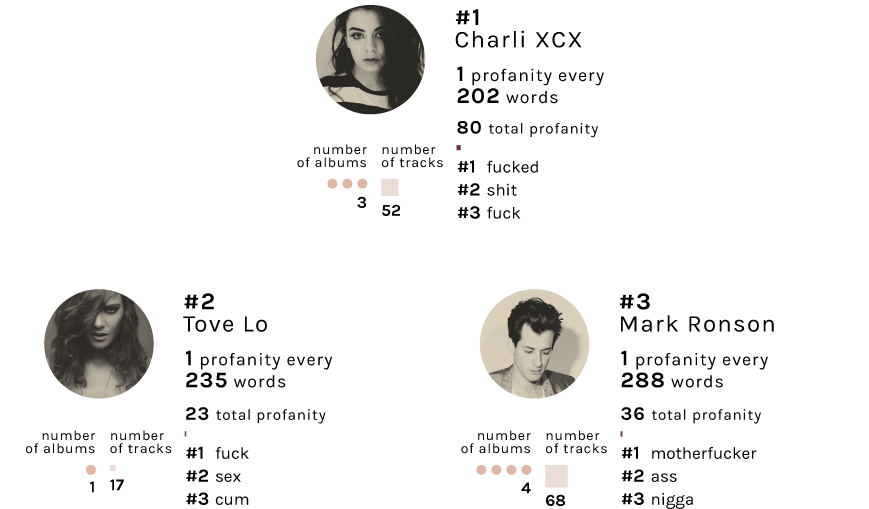
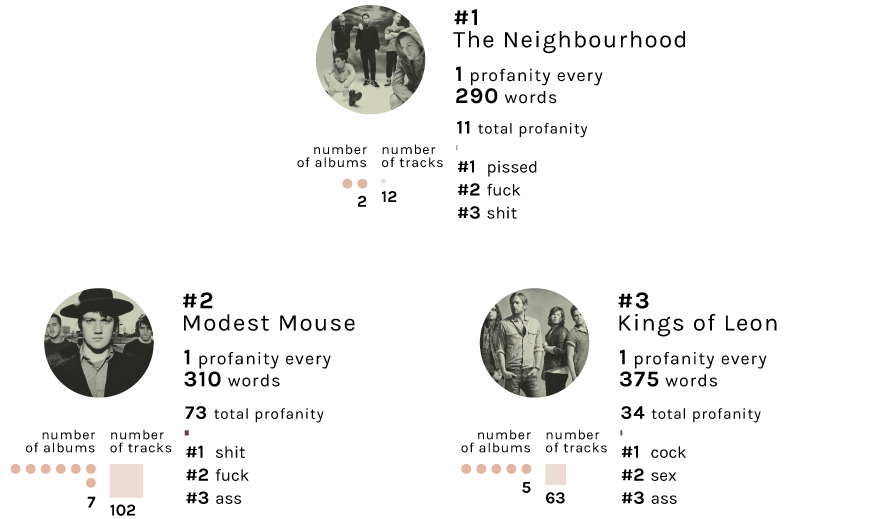
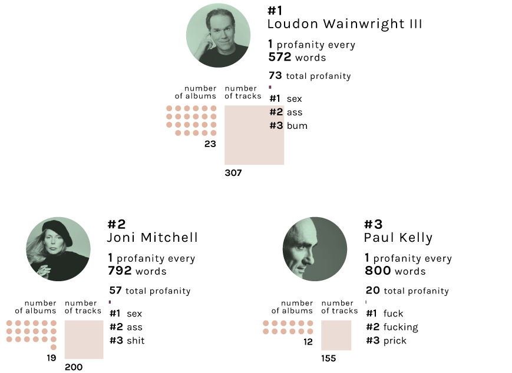
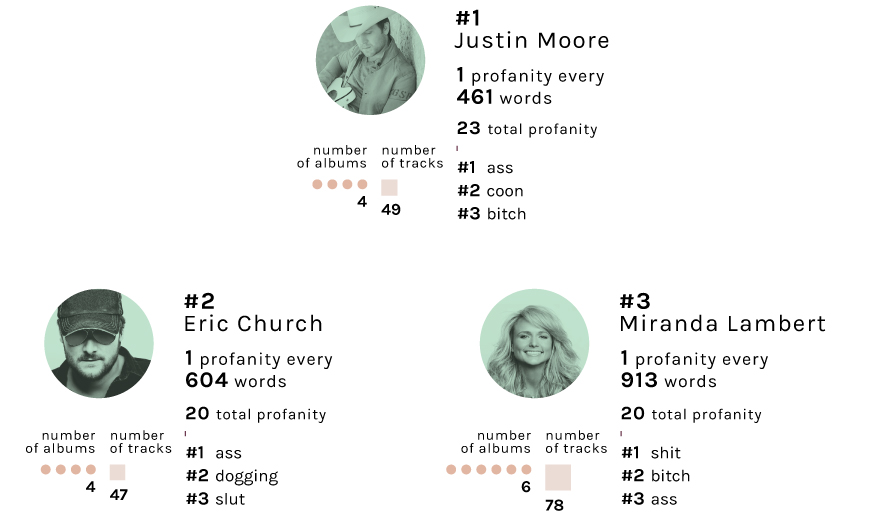

Ever wondered which popular musician is the most potty-mouthed. Let's find out.
Genres studied
The above 8 popular genres are chosen for simplifying the analysis. For each genre the most googled artists were considered and the lyrics of their studio-albums were considered for analysis. This leads to the following dataset.
Data overview
The lyrics in the dataset were scanned for the frequency of occurrence of each swear word from this list. The creation of this list was explained previously.
Overall swear word usage
An average of 0.66% of all words in lyrics of these artists are swear words. 1 in every 152 words is a swear word. This is higher than the percentage of profanities in everyday speech (which is around 0.5%)1.
Overall stats
This percentage is higher than the frequency of swear words in lyrics in general, as observed in our previous study. This is because of the higher concentration of hiphop artists in this dataset as compared to the other one.
Profanity usage by popular artists
The usage of profanity in lyrics can be studied by the total usage and by the frequency. Hip-Hop artists dominate both of these categories (d'oh). The top swear words are nigga/s/z, fuck, shit and bitch.
Most swear words in lyrics
Amongst the 361 artists studied, Lil Wayne uses the most swear words in his lyrics. He is followed closely by Tupac Shakur, Snoop Dogg, Busta Rhymes and T.I. This analysis is skewed by artists who have released more albums but the next metric tries to counter this.
Most frequent use of swear words
Chief Keef uses swear words most frequently amongst the 361 artists studied here. There is 1 profanity for every 20 words in his lyrics. He is followed by Dr. Dre, N.W.A. (Dr. Dre is a member), ASAP Rocky and Young Thug.

Heavy Metal
Heavy Metal is the second most profane genre. Korn, Slipknot and Children of Bodom use profanity most frequently.
Electronic music
Despite being mostly instrumental Electronic artists seem to pack a lot of swear words in their music. Diplo leads the rankings here followed by Ryuichi Sakamoto and DeadMau5.
Rock
There is a marked decrease in the profanity frequency of the rest of the genres as compared to Hip-Hop, Heavy Metal and Electronic. Amongst the rock artists, Green Day and Red Hot Chili Peppers use profanity most frequently. The most used swear words are different for both.
Pop
Pop lyrics are known for their wide appeal and use very few swear words. Amongst the most searched pop artists, Charli XCX uses most profanity followed by Tove Lo and Mark Ronson.
Indie Rock
The Neighbourhood is band using most profanity amongst the Indie rockers. They are followed by Modest Mouse and Kings of Leon. The most commonly used swear word is shit followed by fuck.
Folk
There is a marked decrease in the usage of profanity in Folk and Country as compared to the above genres. Loudon Wainwright III and Joni Mitchell use swear words most frequently.
Country
Country is the least profane genre amongst the 8 popular genres studied. Justin Moore uses swear words most frequently followed by Eric Church and Miranda Lambert. The most commonly used swear words are ass, coon, shit and bitch.
Conclusion
As expected, Hip-hop artists are the most profane amongst the most searched artists. Lil Wayne has the most total number of swear words in his lyrics while Chief Keef uses swear words most frequently. Heavy metal follows Hip-Hop but the frequency of swear words is quite less compared to Hip-Hop. Korn and Slipknot are the most profane Heavy metal bands. Folk and Country artists use the least profanity.
Some themes and moments in songs call for usage of swear words but it is difficult to distinguish these from the cases where swear words are used just for the sake of it. This study is merely an analysis of profanity from a statistical point of view and another way to look at the works of our favourite artists.
Please subscribe to our mailing list to be notified of new articles.